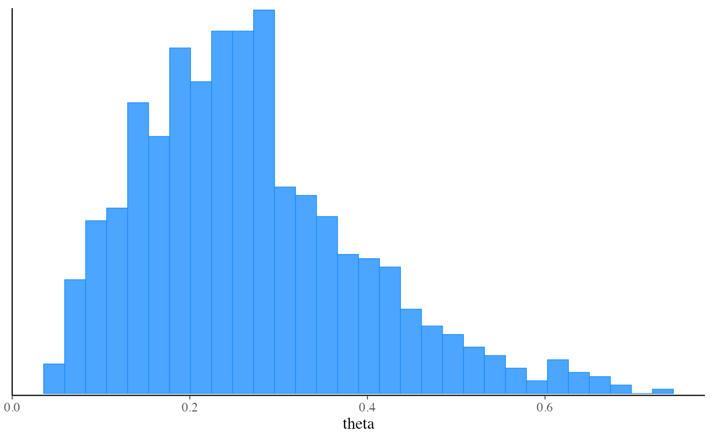

The $laplace() method of a CmdStanModel object produces a
sample from a normal approximation centered at the mode of a distribution
in the unconstrained space. If the mode is a maximum a posteriori (MAP)
estimate, the samples provide an estimate of the mean and standard
deviation of the posterior distribution. If the mode is a maximum
likelihood estimate (MLE), the sample provides an estimate of the standard
error of the likelihood. Whether the mode is the MAP or MLE depends on
the value of the jacobian argument when running optimization. See the
CmdStan User’s Guide
for more details.
Any argument left as NULL will default to the default value used by the
installed version of CmdStan.
laplace(
data = NULL,
seed = NULL,
refresh = NULL,
init = NULL,
save_latent_dynamics = FALSE,
output_dir = NULL,
output_basename = NULL,
sig_figs = NULL,
threads = NULL,
opencl_ids = NULL,
mode = NULL,
opt_args = NULL,
jacobian = TRUE,
draws = NULL
)(multiple options) The data to use for the variables specified in the data block of the Stan program. One of the following:
A named list of R objects with the names corresponding to variables
declared in the data block of the Stan program. Internally this list is then
written to JSON for CmdStan using write_stan_json(). See
write_stan_json() for details on the conversions performed on R objects
before they are passed to Stan.
A path to a data file compatible with CmdStan (JSON or R dump). See the appendices in the CmdStan guide for details on using these formats.
NULL or an empty list if the Stan program has no data block.
(positive integer(s)) A seed for the (P)RNG to pass to CmdStan.
In the case of multi-chain sampling the single seed will automatically be
augmented by the the run (chain) ID so that each chain uses a different
seed. The exception is the transformed data block, which defaults to
using same seed for all chains so that the same data is generated for all
chains if RNG functions are used. The only time seed should be specified
as a vector (one element per chain) is if RNG functions are used in
transformed data and the goal is to generate different data for each
chain.
(non-negative integer) The number of iterations between
printed screen updates. If refresh = 0, only error messages will be
printed.
(multiple options) The initialization method to use for the variables declared in the parameters block of the Stan program. One of the following:
A real number x>0. This initializes all parameters randomly between
[-x,x] on the unconstrained parameter space.;
The number 0. This initializes all parameters to 0;
A character vector of paths (one per chain) to JSON or Rdump files
containing initial values for all or some parameters. See
write_stan_json() to write R objects to JSON files compatible with
CmdStan.
A list of lists containing initial values for all or some parameters. For MCMC the list should contain a sublist for each chain. For other model fitting methods there should be just one sublist. The sublists should have named elements corresponding to the parameters for which you are specifying initial values. See Examples.
A function that returns a single list with names corresponding to the
parameters for which you are specifying initial values. The function can
take no arguments or a single argument chain_id. For MCMC, if the function
has argument chain_id it will be supplied with the chain id (from 1 to
number of chains) when called to generate the initial values. See
Examples.
Ignored for this method.
(string) A path to a directory where CmdStan should write
its output CSV files. For interactive use this can typically be left at
NULL (temporary directory) since CmdStanR makes the CmdStan output
(posterior draws and diagnostics) available in R via methods of the fitted
model objects. The behavior of output_dir is as follows:
If NULL (the default), then the CSV files are written to a temporary
directory and only saved permanently if the user calls one of the $save_*
methods of the fitted model object (e.g.,
$save_output_files()). These temporary
files are removed when the fitted model object is
garbage collected (manually or automatically).
If a path, then the files are created in output_dir with names
corresponding to the defaults used by $save_output_files().
(string) A string to use as a prefix for the names of
the output CSV files of CmdStan. If NULL (the default), the basename of
the output CSV files will be comprised from the model name, timestamp, and
5 random characters.
(positive integer) The number of significant figures used
when storing the output values. By default, CmdStan represent the output
values with 6 significant figures. The upper limit for sig_figs is 18.
Increasing this value will result in larger output CSV files and thus an
increased usage of disk space.
(positive integer) If the model was
compiled with threading support, the number of
threads to use in parallelized sections (e.g., when
using the Stan functions reduce_sum() or map_rect()).
(integer vector of length 2) The platform and
device IDs of the OpenCL device to use for fitting. The model must
be compiled with cpp_options = list(stan_opencl = TRUE) for this
argument to have an effect.
(multiple options) The mode to center the approximation at. One of the following:
A CmdStanMLE object from a previous run of $optimize().
The path to a CmdStan CSV file from running optimization.
NULL, in which case $optimize() will be run
with jacobian=jacobian (see the jacobian argument below).
In all cases the total time reported by $time() will be
the time of the Laplace sampling step only and does not include the time
taken to run the $optimize() method.
(named list) A named list of optional arguments to pass to
$optimize() if mode=NULL.
(logical) Whether or not to enable the Jacobian adjustment
for constrained parameters. The default is TRUE. See the
Laplace Sampling
section of the CmdStan User's Guide for more details. If mode is not
NULL then the value of jacobian must match the value used when
optimization was originally run. If mode is NULL then the value of
jacobian specified here is used when running optimization.
(positive integer) The number of draws to take.
A CmdStanLaplace object.
The CmdStanR website (mc-stan.org/cmdstanr) for online documentation and tutorials.
The Stan and CmdStan documentation:
Stan documentation: mc-stan.org/users/documentation
CmdStan User’s Guide: mc-stan.org/docs/cmdstan-guide
Other CmdStanModel methods:
model-method-check_syntax,
model-method-compile,
model-method-diagnose,
model-method-expose_functions,
model-method-format,
model-method-generate-quantities,
model-method-optimize,
model-method-pathfinder,
model-method-sample_mpi,
model-method-sample,
model-method-variables,
model-method-variational
# \dontrun{
file <- file.path(cmdstan_path(), "examples/bernoulli/bernoulli.stan")
mod <- cmdstan_model(file)
mod$print()
#> data {
#> int<lower=0> N;
#> array[N] int<lower=0,upper=1> y;
#> }
#> parameters {
#> real<lower=0,upper=1> theta;
#> }
#> model {
#> theta ~ beta(1,1); // uniform prior on interval 0,1
#> y ~ bernoulli(theta);
#> }
stan_data <- list(N = 10, y = c(0,1,0,0,0,0,0,0,0,1))
fit_mode <- mod$optimize(data = stan_data, jacobian = TRUE)
#> Initial log joint probability = -8.0994
#> Iter log prob ||dx|| ||grad|| alpha alpha0 # evals Notes
#> 5 -6.74802 0.000245062 1.61833e-06 1 1 8
#> Optimization terminated normally:
#> Convergence detected: relative gradient magnitude is below tolerance
#> Finished in 0.1 seconds.
fit_laplace <- mod$laplace(data = stan_data, mode = fit_mode)
#> Calculating Hessian
#> Calculating inverse of Cholesky factor
#> Generating draws
#> iteration: 0
#> iteration: 100
#> iteration: 200
#> iteration: 300
#> iteration: 400
#> iteration: 500
#> iteration: 600
#> iteration: 700
#> iteration: 800
#> iteration: 900
#> Finished in 0.1 seconds.
fit_laplace$summary()
#> # A tibble: 3 × 7
#> variable mean median sd mad q5 q95
#> <chr> <dbl> <dbl> <dbl> <dbl> <dbl> <dbl>
#> 1 lp__ -7.25 -6.97 0.724 0.305 -8.72 -6.75
#> 2 lp_approx__ -0.516 -0.225 0.747 0.306 -1.93 -0.00324
#> 3 theta 0.267 0.250 0.124 0.120 0.0954 0.499
# if mode isn't specified optimize is run internally first
fit_laplace <- mod$laplace(data = stan_data)
#> Initial log joint probability = -15.1067
#> Iter log prob ||dx|| ||grad|| alpha alpha0 # evals Notes
#> 5 -6.74802 0.00203152 6.06231e-05 1 1 8
#> Optimization terminated normally:
#> Convergence detected: relative gradient magnitude is below tolerance
#> Finished in 0.1 seconds.
#> Calculating Hessian
#> Calculating inverse of Cholesky factor
#> Generating draws
#> iteration: 0
#> iteration: 100
#> iteration: 200
#> iteration: 300
#> iteration: 400
#> iteration: 500
#> iteration: 600
#> iteration: 700
#> iteration: 800
#> iteration: 900
#> Finished in 0.1 seconds.
fit_laplace$summary()
#> # A tibble: 3 × 7
#> variable mean median sd mad q5 q95
#> <chr> <dbl> <dbl> <dbl> <dbl> <dbl> <dbl>
#> 1 lp__ -7.28 -6.98 0.782 0.316 -8.84 -6.75
#> 2 lp_approx__ -0.531 -0.231 0.756 0.320 -1.96 -0.00280
#> 3 theta 0.273 0.251 0.128 0.123 0.0984 0.510
# plot approximate posterior
bayesplot::mcmc_hist(fit_laplace$draws("theta"))
#> `stat_bin()` using `bins = 30`. Pick better value with `binwidth`.

# }